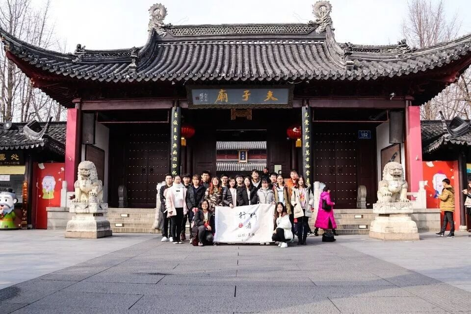
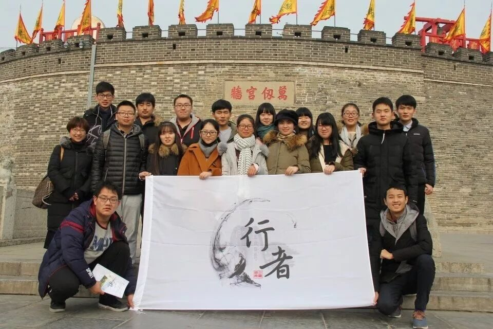
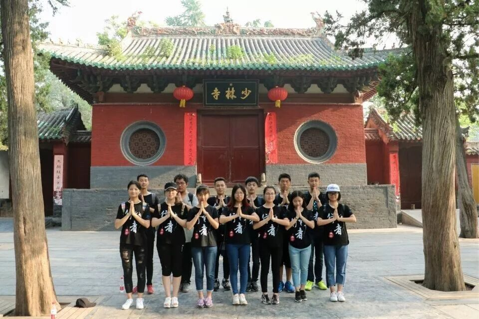
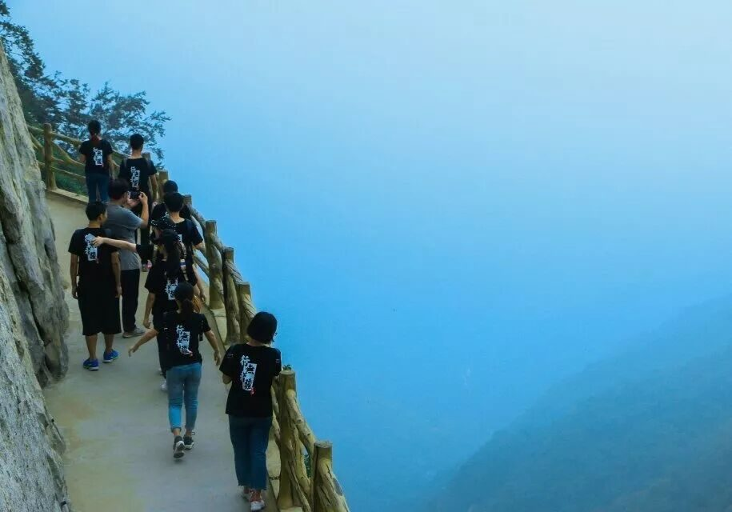
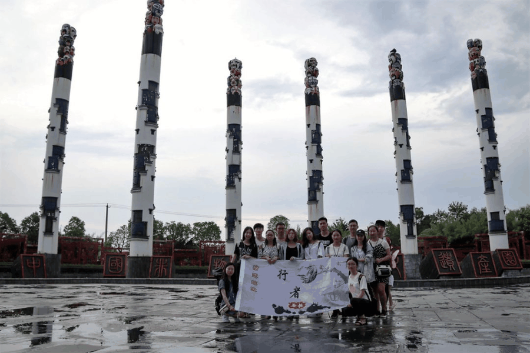
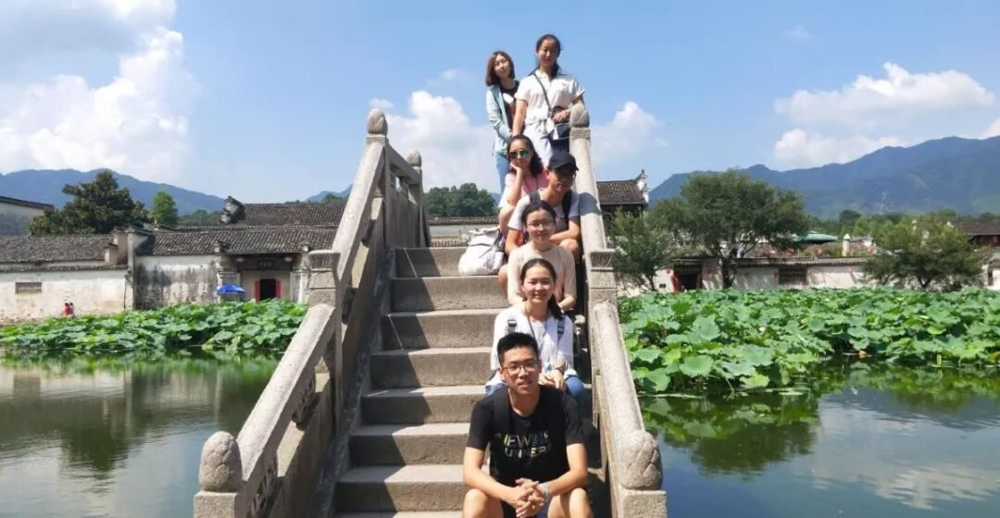
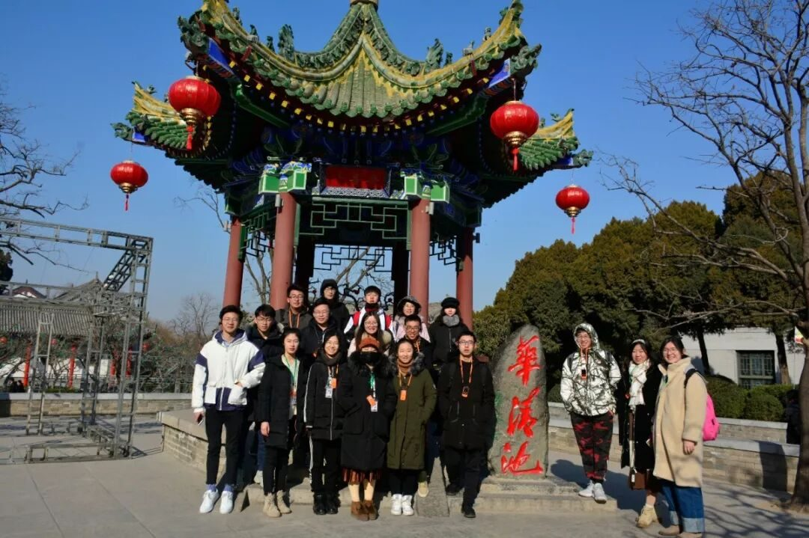
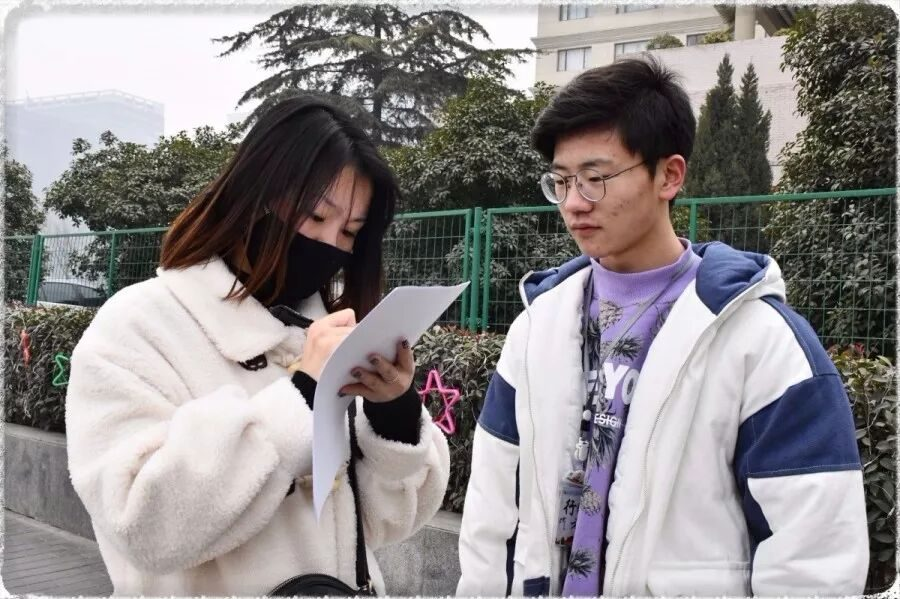

【行者无疆，我们一直在继续】

招募进入到第三天了，今天行者酱带大家看看往期行者留下的足迹，听听他们的故事吧!
行者无疆之文溯齐鲁
怀着对齐鲁文化的敬仰,第一期“行者无疆”社会实践团队踏上齐鲁大地，在济南，泰安，曲阜多地，追寻孔孟文化，重温水浒梁山，吟唱沂蒙小调。
在实践过程中，我们看到了许多文化古迹遭到不同程度的破坏，有天灾，但更多的是人祸。三孔内不少碑上有着红卫兵留下的记号，趵突泉内投满了硬币，雕像的面部被摸的铮亮。这让我们意识到无论是保护文物，还是保护环境，还是改善社会风气，都需要每个人独善其身，互相监督，共同努力。始于齐鲁，忠于文化，行者无疆，永不止步……

行者无疆之知遇中原
满怀着对中原文明的期待，第二期“行者无疆”社会实践团队去到了安阳、登封、洛阳多地，邂逅了美丽动人的中原文化。
行至古城，那些飘散着些许古旧气息的文化从尘封的历史中漫溯而上，似乎在向我们展示着这座城的荣辱兴衰，一幕幕的经典传奇就这样深深印在脑海：中华汉字代代相传，历久弥新；登封热土攻坚克难，收获满满；白马寺内停住流连，风采尽显。

在调研工作中，我们屡次被拒，被批评和怀疑，然而凭借着对文化的坚定我们又屡次坚持，不断修改和完善着问卷及其他工作。此行既增长了知识，又在饱览山川古迹中开拓了眼界。行者无疆，一直在路上……


行者无疆之致旅吴越
第三期“行者无疆”社会实践团队去到了南京、苏州两地进行文化调研活动。“帝王之光，经久不熄”，在钟山上，我们探寻着明孝陵之谜，其巧妙布局、“治隆唐宋”的石碑、风雨侵蚀的石像等，皆使这段千古帝王的兴衰有据可考；“鉴宝寻珍，广宣国粹”， 在南京博物院、江宁织造博物馆里，我们寻微访古、赏建康云锦霓裳、品曹氏兴衰迭史；“鉴宝寻珍，广宣国粹”，在夫子庙、狮子林、拙政园、留园里，我们寻园林之境，看古今之结合。
调研途中，为更深刻了解不同文化的现状，团队就各地民俗、历史常识、文化渊源等方面设计了调研问卷，使得调研结果更具有代表性和说服力。行者无疆，传承还在继续……
行者无疆之拾遗皖徽
第四期”行者无疆”社会实践团来到了合肥、宣城、黄山三地。“十五行者徽州行，意寻文化非遗承”，我们领略了中国非物质文化遗产园、安徽省博物馆、中国宣纸博物馆厚重的文化底蕴；感受了宏村、屯溪老街、徽州古城的风土人情；聆听了大国工匠、非遗传承人的谆谆教诲。

作为中国古代文明的重要发祥地，安徽在时光流淌中沉积下许多历史遗迹。但当分发调查问卷，采访街边路人，却发现多数人对于非遗知之甚少，甚至漠不关心，不禁让人慨叹民间艺术之亟需拯救，也让行者们深深体会到“保护非遗道阻且艰”。
行者无疆赶赴安徽，只希望能从自己出发，为非遗文化的传承贡献一份绵薄之力，希望更多的人能了解非遗，了解这些千年精粹。行者无疆，我们还在前进……

行者无疆之韶忆长安
第五期”行者无疆”社会实践团来到了十三朝古都西安。“博物观澜，承绵绵余泽”，在陕西省历史博物馆里，我们虽不曾亲眼见其生，但却可观其物，解其人，大这抵就是博物馆的魅力吧；“一眼千年是古都，追秦溯唐沐清风” 阿房宫的遗址保留，芙蓉园的盛唐再现，让行者们震撼于历史遗存的完美博大，又感喟与现代建设的勃勃生机；“兵谏华清-秦俑怀古” 华清宫中长恨一歌演绎着帝妃的缠绵悱恻，帝陵之中威武的兵马俑正象征着世界的奇迹。

古老悠久的历史，浓厚大气的底蕴，在这座城市中热烈沸腾，熬煮出悠长的滋味，点滴亦足以醉人。行者对于其文化的探寻，由浅入深，所获颇多。明宫遗址，古旧城墙，钟鼓楼前，均留下行者采访调研的足迹，若个人的发声尚显微弱，但经数百份问卷凝练的声音，必定值得一听。行者无疆，我们正在为文化发声……

近三年的时间里，行者从未否认自己的无知，但也从未放弃对于未知的探索，行至一城，便了解一城的文化，是职责亦是信念。每一次调研亦是一场修行，修心亦修性，如诗岁月，遥赴万里，不负行者之名。
行者无疆之源洄渝州正在招募中，更多招募详情请加入咨询群：456848281，往期更多调研内容请关注公众号“行者无疆实践团”。
行者无疆，期待你成为下一位行者！

来源丨行者无疆实践团
文字丨行者无疆实践团
排版丨牛直达
审核丨邓子孚 沈柏宇
行者无疆实践团
QQ：2758025831

随行者一起认识世界
长按二维码关注